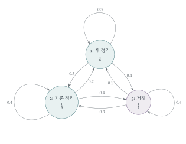

STEP III 1996, 문제 12
계속 읽기 전에 문제를 먼저 읽어 보자. 문제는 STEP Support Programme의 문제 데이터베이스에 있다: step.maths.org/questions/96-s3-q12
도입
엑스(Ecks) 교수의 정리에는 일정한 규칙이 있다. 다음에 무엇을 증명할지는 바로 직전에 무엇을 증명했는지에만 달려 있다. 미래가 현재에는 의존하지만 과거에는 의존하지 않는 과정을 마르코프 연쇄(Markov chain)라고 하며, 마르코프 연쇄는 어디에나 있다. 날씨 모형에도, 보드게임 뱀과 사다리(Snakes and Ladders)에도, DNA 모형에도, 구글의 초기 페이지랭크(PageRank) 알고리즘에도, 그리고 통계학자들이 복잡한 확률분포를 시뮬레이션할 때 쓰는 방법에도 있다.
이 문제는 장기적으로 정리의 유형이 어떤 비율로 섞이는지, 즉 정상분포(stationary distribution)를 구한다. 장기적으로 엑스 교수의 정리 여섯 개 중 하나는 새롭고 옳은 정리이고, 절반은 거짓이다. 이어서 문제는 연쇄를 시간을 거슬러 거꾸로 돌려 보고, 오늘의 정리가 주어졌을 때 어제의 정리는 무엇이었는지를 묻는다.
시작하기 전에
“각 행의 합이 \(1\)이다”라는 조건은 무슨 뜻인가? 각 열의 합도 \(1\)인가?
\(i\)행은 현재 유형이 \(i\)일 때 다음 유형이 될 확률들을 나열한 것이다. 세 유형 중 하나는 반드시 일어나므로 각 행의 합은 \(1\)이다. 열은 그럴 필요가 없다. 둘째 열의 합은 정확히 \(1\)이지만, 첫째 열의 합은 \(0.6\)이고 셋째 열의 합은 \(1.4\)이다.
차근차근 풀기
단계 1 한 단계
현재 정리의 유형 \(i\)에 대해 조건을 걸고 전확률 법칙(law of total probability)을 쓰면 \[b_j = \sum_i\mathrm{P}(\text{현재 } i)\,\mathrm{P}(\text{다음 } j \mid \text{현재 } i) = a_1p_{1j} + a_2p_{2j} + a_3p_{3j}. \qed\] 행렬로 쓰면 행벡터(row vector)로 \(\mathbf b = \mathbf aP\)이다.
단계 2 정상분포
\(a_1 + a_2 + a_3 = 1\)이면서 \(\mathbf a = \mathbf aP\)인 것을 찾고자 한다. 방정식을 모두 써 보아라. 어느 것이 가장 간단한가?
방정식은 다음과 같다. \[\begin{aligned} a_1 &= 0.3a_1 + 0.2a_2 + 0.1a_3, \\ a_2 &= 0.3a_1 + 0.4a_2 + 0.3a_3, \\ a_3 &= 0.4a_1 + 0.4a_2 + 0.6a_3. \end{aligned}\] (이 방정식들은 독립이 아니다. 모두 더하면 양변이 모두 \(a_1 + a_2 + a_3\)이 된다.) 둘째 식에서 \(0.6a_2 = 0.3(a_1 + a_3) = 0.3(1 - a_2)\)이므로 \(a_2 = \frac13\)이다. 첫째 식에서 \(7a_1 = 2a_2 + a_3 = \frac23 + a_3\)이고 \(a_1 + a_3 = \frac23\)이므로 \(8a_1 = \frac43\), \(a_1 = \frac16\), \(a_3 = \frac12\)이다. \[(a_1, a_2, a_3) = \bigl(\tfrac16, \tfrac13, \tfrac12\bigr). \qed\]
단계 3 연쇄를 거꾸로 돌리기
\(q_{ij} = \mathrm{P}(\text{직전 } i \mid \text{현재 } j)\)이다. 직전 정리와 현재 정리 모두에 정상분포를 적용하여 베이즈 정리(Bayes’ theorem)를 써라.
베이즈 정리에 의해 \[q_{ij} = \frac{\mathrm{P}(\text{직전 } i)\,\mathrm{P}(\text{현재 } j \mid \text{직전 } i)}{\mathrm{P}(\text{현재 } j)} = \frac{a_ip_{ij}}{a_j}.\] 예를 들어 \(q_{11} = \frac{\frac16 \times 0.3}{\frac16} = 0.3\)이고 \(q_{21} = \frac{\frac13 \times 0.2}{\frac16} = 0.4\)이다. 모두 모으면 (\(i\)는 행, \(j\)는 열을 나타낸다) \[(q_{ij}) = \begin{pmatrix} 0.3 & 0.15 & \frac{2}{15} \\ 0.4 & 0.4 & \frac{4}{15} \\ 0.3 & 0.45 & 0.6 \end{pmatrix}. \qed\] 이번에는 각 열의 합이 \(1\)이다. \(j\)열이 직전 정리가 될 수 있는 유형들을 나열하기 때문이다.

돌아보기
행렬로 본 전확률 법칙. 연쇄의 한 단계는 행벡터에 행렬 \(P\)를 곱하는 것이다.
정상성은 고유벡터이다. \(\mathbf a = \mathbf aP\)는 \(\mathbf a\)가 고윳값(eigenvalue) \(1\)에 대한 \(P\)의 좌고유벡터(left eigenvector)라는 뜻이다.
베이즈 정리로 거꾸로 돌리기. 거꾸로 가는 확률들은 순방향 행렬과 정상분포로부터 만들어지는 또 하나의 확률행렬(stochastic matrix)을 이룬다.
숨은 수학
평형으로의 수렴
엑스 교수가 어떤 정리에서 출발하든, \(n\)개의 정리를 더 증명한 뒤 유형의 분포는 \(\mathbf a_0P^n\)이다. 이 연쇄처럼 모든 유형 다음에 모든 유형이 올 수 있는 연쇄에서는, 출발점에 관계없이 \(P^n\)이 모든 행이 정상분포 \((\frac16, \frac13, \frac12)\)와 같은 행렬로 수렴(converge)한다. 수렴 속도는 \(P\)의 나머지 고윳값들(여기서는 \(0.2\)와 \(0.1\))이 결정하며, 이들의 거듭제곱은 기하급수적으로 줄어든다. 단 몇 개의 정리만 지나도 엑스 교수의 과거는 잊혀진다. 마르코프 연쇄에 대한 이 에르고딕 정리(ergodic theorem)는 대학 2학년 확률론 과정의 핵심 결과이며, 마르코프 연쇄 몬테카를로(Markov chain Monte Carlo) 방법이 작동하는 근거이다. 복잡한 분포에서 표본을 뽑으려면, 그 분포를 정상분포로 갖는 마르코프 연쇄를 설계하여 오랫동안 돌리면 된다.
가역성
거꾸로 가는 연쇄 \((q_{ij})\)는 순방향 연쇄 \((p_{ij})\)와 다르다. 엑스 교수의 정리를 오랫동안 기록한 것을 보면 시간의 방향을 알아낼 수 있다는 뜻이다. 거꾸로 가는 연쇄와 순방향 연쇄가 일치하는 연쇄, 즉 모든 \(i\), \(j\)에 대해 \(a_ip_{ij} = a_jp_{ji}\)인 연쇄를 가역적(reversible)이라고 한다. 네트워크 위의 무작위 행보(random walk)와 열평형 상태에 있는 물리계의 모형이 여기에 속한다. 가역성은 정상분포를 쉽게 찾게 해 주므로 강력한 성질이다.
안드레이 마르코프(Andrey Markov)는 1906년에 자신의 연쇄를 도입했는데, 큰 수의 법칙(law of large numbers)에 독립성(independence)이 꼭 필요하지는 않다는 것을 보이려는 것이 한 가지 이유였다. 이는 독립성이 필요하다고 주장한 수학자 Pavel Nekrasov와의 논쟁에서 나온 것이다. 1913년에 마르코프는 이 아이디어를 푸시킨(Pushkin)의 운문 소설 예브게니 오네긴(Eugene Onegin)의 처음 \(20\,000\)개 글자에 적용했다. 그는 각 글자를 모음과 자음으로 분류하고, 각 글자의 유형이 바로 앞 글자의 유형에 의존하며 그 방식이 두 상태 연쇄로 잘 설명된다는 것을 보였다. 이것은 최초의 텍스트 통계 분석이었으며, 오늘날 모든 예측 입력 시스템의 조상이다.
사고 기술
어떤 계가 고정된 확률로 상태 사이를 옮겨 다닐 때, 분포는 벡터로, 전이는 행렬로 써라. 그러면 장기적인 거동은 고유벡터에 관한 문제가 된다.
대학에서는 이를 통해 7장의 선형대수가 확률론으로 들어온다. 페론–프로베니우스 정리(Perron–Frobenius theorem)는 정상분포의 존재를 보장하고, 나머지 고윳값들은 그 분포에 얼마나 빨리 도달하는지를 잰다.
더 도전하기
토끼 굴. STEP III 2003, 문제 13에 도전해 보아라. 각 꼭짓점에 출구가 있는 정사각형의 꼭짓점 위를 움직이는 무작위 행보를 첫 단계 방정식으로 푸는 문제이다.
두 단계. 엑스 교수의 마지막 정리가 새롭고 옳은 정리였다면, 그다음다음 정리가 세 유형 각각일 확률을 구하여라.
고윳값. \(P\)의 고윳값이 \(1\), \(0.2\), \(0.1\)임을 보여라.
가역적인가? 엑스 교수의 연쇄에 대해 \(a_ip_{ij} = a_jp_{ji}\)가 성립하는지 확인하여라. 그 답은 무엇을 말해 주는가?
더 읽을거리
James Norris, Markov Chains (Cambridge University Press). 학부 과정의 표준 교재이다.
Olle Häggström, Finite Markov Chains and Algorithmic Applications (Cambridge University Press). 짧으며, 마르코프 연쇄 몬테카를로를 잘 다룬다.
Brian Hayes, “First links in the Markov chain”, American Scientist 101 (2013). 마르코프의 푸시킨 분석을 다시 들려준다.